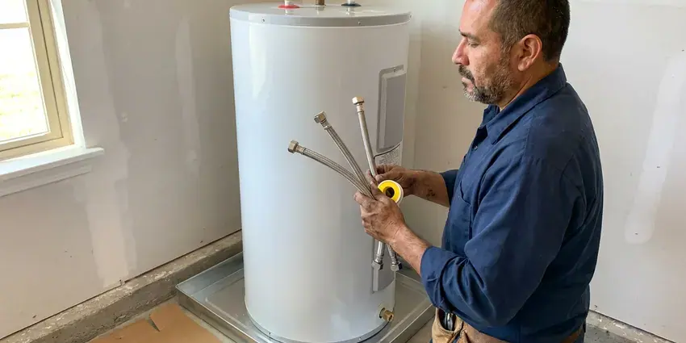

Plumbing Installation in Jacksonville, FL
HDF Plumbing installs tank and tankless heaters, softeners, gas lines, PEX and backflow preventers across Jacksonville, FL.
- Local Jacksonville Plumbers
- Pressure-Checked Lines
- Old Equipment Hauled Away
- Licensed Florida Plumbers
Replacing a Water Heater, Softener or Water Line in Jacksonville, FL?
Tell us what you are installing and we will size it and price it.
Plumbing Installation Work in Jacksonville, FL
HDF Plumbing installs the equipment that keeps hot water and gas moving through your house, and most of it sits in a garage or utility closet. That means tank and tankless water heaters, softeners, PEX repipes, water service lines, gas piping and backflow preventers. Most are one-day jobs.
Our expertise includes:
- Tank and tankless water heater installs
- Gas runs and backflow preventers
- Softener loops and whole-house PEX repiping

Additional Plumbing Installation Services in Jacksonville, FL
We install water heaters, pumps, lines, and fixtures across Jacksonville, FL with careful, permitted work that passes inspection the first time.


Water Heater Installation near Jacksonville


Customers
Why Choose HDF Plumbing for Plumbing Installation in Jacksonville, FL?
Every plumber we send is licensed and insured, and works under the Florida plumbing code every day of the week. We pick pipe and fittings for the water and weather you actually have, not for a catalog photo, and we tell you why we picked them. Brass, not pot metal.
- Code Compliant, Plumbing and fuel gas code requirements are met on every install.
- Clear Pricing, One written quote covering equipment, labor, permit and haul-away.
- Customer Satisfaction, Floors get covered and the work area gets swept before we leave.
Citywide Coverage
Every neighborhood in Jacksonville and the towns around it is in our service area. A condo in the middle of town gets the same crew and pricing as a farmhouse past the city limits. We quote on site.
Experienced Team
Gas line work and water heater replacements make up a big share of what our technicians do every single week. That repetition is where the skill comes from. Odd layouts do not rattle them.
Safety-First Approach
Code compliance is built into every install, not added at the end. We follow the plumbing and fuel gas codes adopted locally, and every system we install is built to pass inspection on the first visit. Local rules in Jacksonville, FL get the same attention. A failed inspection costs everyone a day.
Trusted Certified Jacksonville Plumbing Services Professionals
At HDF Plumbing, we are proud to offer certified plumbing services throughout Jacksonville, FL. Those papers on the wall mean something. Our plumbers hold recognized industry credentials, and they follow strict safety and quality rules on every repair, installation and maintenance call we run.
Call Us Now PHCC Plumbing Contractor Recognition
PHCC Plumbing Contractor Recognition Better Business Bureau (BBB) Accreditation
Better Business Bureau (BBB) Accreditation Angi Certified Pro
Angi Certified Pro ISO 9001 Quality Management Certification
ISO 9001 Quality Management CertificationPlumbing Installation Work in Jacksonville, FL
Backflow Assembly Testing and Installation in Jacksonville
Fire lines and irrigation systems account for most of the backflow assemblies we install. A certified tester checks each assembly on install day and the results go to the water provider. That starts the annual clock. Most jurisdictions want a retest every 12 months, and we can put you on a reminder list so it does not slip.

Tank and Tankless Water Heater Installs in Jacksonville
Bradford White and Rheem both make good tanks, and the brand matters less than the fit. Demand, available space and the cost of gas versus electric at your address decide the model we recommend. Then we check the Florida code items. Closed systems, the kind with a check valve or PRV at the meter, usually need an expansion tank, which we install alongside the heater.
Water Line Installation in Jacksonville
Galvanized steel pipe rusts from the inside, so pressure drops a little every year until the shower barely runs. We replace it with PEX or copper and make every connection on the new line leak-free before backfill. Water across much of Florida comes from limestone aquifers and runs hard, leaving heavy scale on fixtures and inside water heaters. We pick pipe for your water. We cover the whole run, from the meter to the house to each fixture supply, and follow local trench depth and backfill rules.
Expansion Tank and Sewage Ejector Installs in Jacksonville, FL
A closed water system has nowhere for heated water to expand, so pressure climbs every single time the heater cycles. An expansion tank absorbs that swing and keeps the relief valve from dripping. Homes with a PRV usually need one. Fixtures below the sewer line get an ejector system with a sealed basin, a check valve and a vent.
Whole-House Water Softener Installation in Jacksonville
Water across much of Florida comes from limestone aquifers and runs hard, leaving stubborn scale on fixtures and inside water heaters. Softener sizing comes down to hardness times daily gallons, which tells us how many grains the resin has to remove between regenerations. A unit sized too small regenerates constantly and wastes salt. The drain line gets a proper air gap. Then we program the regeneration schedule to your water and run a test cycle.
PEX Pipe Installation and Repiping in Jacksonville
Pinhole leaks in copper keep coming back once the pipe walls start to thin. Repiping in PEX stops the cycle. We run either a manifold with home runs to each fixture, which balances pressure, or a trunk-and-branch layout when the walls make home runs impractical. Access holes are kept small and patched, or left square and clean for your drywall contractor.
Softener Loop and Conditioner Installs in Jacksonville
Water across much of Florida comes from limestone aquifers and runs hard, leaving stubborn scale on fixtures and inside water heaters. Some homes already have a softener loop plumbed in, usually in the garage, which turns the install into a two-hour job. No loop means we cut into the main line and add one. Figure on a few extra hours for that. A salt-based softener or a salt-free conditioner fits the same loop.

PEX Pipe Installation in Jacksonville, FL
PEX bends around corners, shrugs off corrosion and needs far fewer fittings than copper. On a whole-house repipe that means fewer joints hidden behind drywall and fewer places for a slow leak to start rotting a stud. It handles a freeze better than rigid pipe. Northern parts of Florida do get occasional freezing nights, which can crack exposed pipes, irrigation lines, and outdoor devices. Stretch or not, we still insulate runs in exterior walls and crawl spaces.
Local Plumbing Installation Near Me in Jacksonville, FL
Our crews work Jacksonville every day, so we are rarely far from your street. We stock our trucks with the fittings, valves and heater parts most installs need, which cuts out the second trip to the supply house. That saves you a day.
Homeowners searching for an installer nearby usually need the job done this week, not next month. We book installs in two-hour arrival windows and call when the truck is on the way. Late is rare. Common water heaters and softener heads ride on the truck, so a same-week install does not depend on a special order from the distributor.
HDF Plumbing at a Glance
- Fully licensed plumbing team covering Jacksonville, FL
- Same-day appointments and 24/7 emergency response
- Clear written estimates, no hidden fees
- 4.9-star rated by 739+ Florida customers
Jacksonville Map
Jacksonville Information
- Population
- 985,843
- Area codes
- 904/470/386
- Service area
- Jacksonville and communities within 40 miles
- Nearby
- St. Augustine, Palm Coast, Gainesville, Ocala
A water heater set without an expansion tank, or a gas line one size too small, comes back to bite you in Jacksonville, FL. Water across much of Florida comes from limestone aquifers and runs hard, leaving heavy scale on fixtures and inside water heaters. Northern parts of Florida do get occasional freezing nights, which can crack exposed pipes, irrigation lines, and outdoor devices.
Talk to a Plumber
Call HDF Plumbing for reliable plumbing work done by licensed pros in Jacksonville, FL.
Our Specialized Plumbing Services in Jacksonville, FL
At HDF Plumbing, you get every kind of plumbing service from one company across Jacksonville, FL. We go from leak detection all the way to full system installations, for homes and commercial buildings, and we do it quickly at a fair price. Here are the core services we offer:


How It Goes on Install Day in Jacksonville, FL
HDF Plumbing runs every plumbing installation the same way, quote first, then permit, then install.
Request a Quote
Call (904) 925-7356 or fill out the online form. Tell us what you want installed and where it goes.
On-Site Assessment
We visit your Jacksonville home, measure and confirm the requirements. No work starts until you have a written estimate.
Professional Installation
Our licensed team installs the equipment to code and manufacturer specs. We test every connection before we leave.
Frequently Asked Questions About Plumbing Installation in Jacksonville
Costs track the project. Plan on $1,600 to $3,500 for a tank heater, $1,500 to $4,000 for a softener, and $5,000 to $15,000 or more for a PEX repipe, scaled to the size of the house. Permits are included in our quotes.
Water heater replacements, gas line work, new sewer lines and major pipe alterations usually do. The local building department sets the list, and it changes, so we check it for each job rather than guessing. We file the paperwork.
PEX is cross-linked polyethylene tubing for water supply lines. It resists corrosion, handles freezing better than copper and installs faster, because it bends around corners instead of needing an elbow at every turn. It is a durable choice for Florida homes, with fewer fittings and fewer leak points. We mostly install PEX-A with expansion fittings.
Rheem, AO Smith, Bradford White, Navien, Rinnai and Fleck, among others. We recommend a model based on your home and budget.
Once a year in most places, including Jacksonville. A certified tester checks that the check valves seal and, on an RPZ, that the relief valve opens at the right pressure differential. We can handle the yearly test and send the report to the water provider.
We would talk you out of it. A bad gas joint or a poorly vented heater can cause a leak, a fire or carbon monoxide poisoning, and those risks do not show up until something goes wrong. A licensed plumber has the tools to test the work and can pull the permit.
Reddish-brown water is the big one. Low pressure, recurring leaks and original pipe in a home past 50 years old all point the same way, toward a repipe. In an older Jacksonville home, original galvanized steel is the usual cause. We can cut out one fitting to show you how much the inside has closed up.
A sump pump moves clear groundwater out of a pit in the basement or crawl space. An ejector pump handles sewage with solids, lifting waste from fixtures below the sewer line up to the main drain or septic tank. You cannot swap one for the other.
Hear From Customers Who Hired Our Plumbing Experts

Robert G.
The camera showed a full break in our clay sewer line near the street. HDF Plumbing replaced it with a trenchless pipe burst, so the only digging was two small pits in the yard. They let us watch the footage before and after.
Sewer Line Replacement · Jacksonville, FL
Patricia H.
We had a slab leak that two other companies could not find. HDF Plumbing located it in under an hour with a listening device. They rerouted the line through the attic instead of breaking up the floor, so we kept our kitchen tile.
Slab Leak Repair · Ocala, FLKevin O.
Before buying our house I paid for a sewer camera inspection. HDF Plumbing found a belly in the line that held standing water about forty feet from the cleanout. We used the video to get the sellers to fix it before closing.
Sewer Camera Inspection · Jacksonville, FL
Greg S.
I manage a small strip center with six tenants. HDF Plumbing handles our annual backflow testing and fixed a recurring clog in the shared sewer line that had been backing into the nail salon. Their reports come in clean and on time.
Commercial Plumbing · Daytona Beach, FL
Nathan E.
Our tankless heater kept throwing an error code and shutting off mid shower. The tech flushed the heat exchanger, which was full of scale, and replaced a bad flow sensor. Hot water has been steady for half a year now.
Water Heater Repair · Palm Coast, FLKaren W.
After our third pinhole leak in copper, we stopped patching. HDF Plumbing gave us a written plan room by room and repiped the house in PEX while we stayed in it. The crew covered our floors every morning and cleaned up every night.
Repiping · Ocala, FL